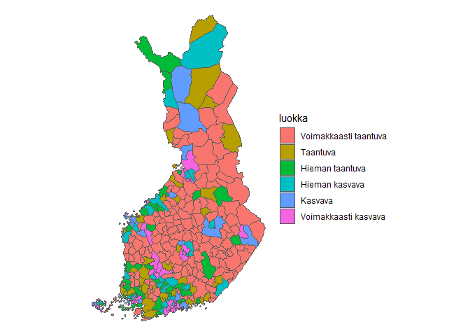

This package contains some data sets from finnish statistial institute.
Installation
You can install the development version of rfinstats from GitHub with:
# install.packages("devtools")
devtools::install_github("StranMax/rfinstats")
head(taantuvat)
#> kunta_nro kunta_nimi kokmuutos_2010_2022 suht_muutos_2010_2022
#> 1 005 Alajärvi -1390 -14.074195
#> 2 009 Alavieska -329 -12.509140
#> 3 010 Alavus -1484 -12.543318
#> 4 016 Asikkala -537 -6.494799
#> 5 018 Askola -68 -1.373801
#> 6 019 Aura 125 3.151301
#> luokka NUTS 1 Tukialue ELY-keskus
#> 1 Voimakkaasti taantuva Manner-Suomi tukialue 2+3 11 Etelä-Pohjanmaan ely
#> 2 Voimakkaasti taantuva Manner-Suomi tukialue 1 13 Pohjois-Pohjanmaan ely
#> 3 Voimakkaasti taantuva Manner-Suomi tukialue 2+3 11 Etelä-Pohjanmaan ely
#> 4 Taantuva Manner-Suomi tukialue 2+3 04 Hämeen ely
#> 5 Hieman taantuva Manner-Suomi tukialue 2+3 01 Uudenmaan ely
#> 6 Hieman kasvava Manner-Suomi tukialue 2+3 02 Varsinais-Suomen ely
#> Suuralue Maakunta Seutukunta
#> 1 3 Länsi-Suomen sa 14 Etelä-Pohjanmaan mk 146 Järviseudun sk
#> 2 4 Pohjois- ja Itä-Suomen sa 17 Pohjois-Pohjanmaan mk 177 Ylivieskan sk
#> 3 3 Länsi-Suomen sa 14 Etelä-Pohjanmaan mk 144 Kuusiokuntien sk
#> 4 2 Etelä-Suomen sa 07 Päijät-Hämeen mk 071 Lahden sk
#> 5 1 Helsinki-Uudenmaan sa 01 Uudenmaan mk 015 Porvoon sk
#> 6 2 Etelä-Suomen sa 02 Varsinais-Suomen mk 025 Loimaan sk
#> Leader Alueluokka
#> 1 40 Aisapari ry Ydinmaaseutu
#> 2 44 Rieska-LEADER ry Ydinmaaseutu
#> 3 37 Kuudestaan ry Ydinmaaseutu
#> 4 15 Päijänne-Leader ry Kaupunkien läh. maaseutu
#> 5 01 Maaseudun kehittämisyhdistys SILMU ry Kaupunkien läh. maaseutu
#> 6 06 Varsinais-Suomen jokivarsikumppanit ry Kaupunkien läh. maaseutu
#> Kuntaryhma
#> 1 Taajaan asutut kunnat
#> 2 Maaseutumaiset kunnat
#> 3 Taajaan asutut kunnat
#> 4 Taajaan asutut kunnat
#> 5 Maaseutumaiset kunnat
#> 6 Maaseutumaiset kunnat
#> geom
#> 1 366787.9, 362458.8, 363260.8, 357374.7, 352599.1, 349403.0, 346951.9, 354508.0, 348733.2, 343298.2, 339046.7, 323281.5, 321987.1, 322692.7, 334329.4, 335875.9, 357452.6, 366787.9, 7001300.6, 6995675.2, 6987161.7, 6990194.2, 6984860.2, 6985933.0, 6973669.7, 6970011.8, 6959704.6, 6961570.2, 6963078.8, 6981415.7, 6984871.9, 6988079.1, 7002293.7, 6998151.0, 7005219.8, 7001300.6
#> 2 382543.4, 372645.9, 370424.7, 360963.0, 367243.8, 364294.5, 368791.0, 382543.4, 7120023.0, 7116054.8, 7104339.0, 7121469.1, 7123247.2, 7127811.2, 7133254.3, 7120023.0
#> 3 343298.2, 345569.2, 336977.5, 327654.9, 319415.8, 317245.3, 310933.5, 306963.9, 310341.1, 303353.3, 305928.1, 309502.4, 318058.9, 323132.9, 329822.4, 334489.9, 339046.7, 343298.2, 6961570.2, 6942289.7, 6933246.5, 6924153.1, 6925258.9, 6922242.4, 6926894.9, 6939661.1, 6943643.1, 6953056.4, 6960568.8, 6961659.0, 6951716.9, 6951459.8, 6962332.9, 6960615.8, 6963078.8, 6961570.2
#> 4 436139.7, 435912.8, 442401.8, 439890.6, 441856.2, 438438.6, 434407.9, 422536.6, 421278.2, 414240.0, 407223.6, 405156.4, 406441.7, 403543.8, 411351.2, 415159.0, 420573.8, 422133.8, 432732.9, 436139.7, 6798279.1, 6793343.4, 6788657.0, 6783966.5, 6780190.8, 6774760.0, 6774122.3, 6776416.5, 6780454.1, 6775727.3, 6774944.9, 6776822.4, 6784737.8, 6790951.0, 6791654.8, 6798601.6, 6797562.9, 6800320.8, 6804050.6, 6798279.1
#> 5 426631.0, 432565.3, 435455.9, 435455.9, 435459.2, 435459.2, 435452.7, 435452.7, 431838.5, 430607.0, 429744.2, 425989.8, 423421.8, 420730.0, 413795.2, 413074.0, 417853.3, 418695.9, 422033.2, 426630.9, 426631.0, 6720528.1, 6717622.6, 6713359.2, 6713359.1, 6713354.3, 6713354.3, 6713352.6, 6713352.6, 6712416.6, 6707685.4, 6705662.1, 6708046.8, 6704555.9, 6706689.3, 6706224.1, 6712770.9, 6714376.3, 6716908.8, 6720617.1, 6720528.1, 6720528.1
#> 6 263938.3, 260508.1, 256331.8, 255415.5, 252771.3, 254539.3, 251038.1, 250110.7, 257539.8, 263938.3, 6730398.8, 6726673.9, 6725335.3, 6722817.5, 6723487.7, 6730559.1, 6731421.6, 6742255.9, 6733857.5, 6730398.8